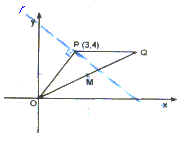
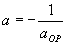
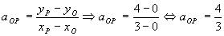
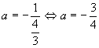
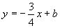
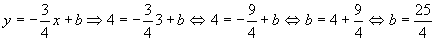
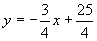
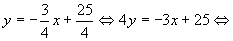
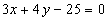

Item 08

A situação está representada na figura ao lado, a reta r (em azul) é perpendicular a OP e passa pelo ponto P.Uma equação da reta r, é:
| y = ax + b | I |
(se você não lembra o que significa os elementos da equação acima, clique aqui.)
O coeficiente angular da reta r:
 | II |
aOP ®coeficiente angular da reta que passa por OP.
Calculemos aOP :

Substituindo o resultado acima em II:

Substituindo o valor de a na equação I:
 | III |
Para encontramos o valor de b, basta conhecermos um ponto da reta r e então substituímos suas coordenadas na equação da reta r (comentário) ; observe na figura que P é um ponto conhecido da reta r. Então:

Substituindo o valor encontrado para b(acima) na equação III, teremos:

Que é conhecida como equação reduzida da reta r.
Façamos algumas operações sobre a equação acima:

Û

Que é conhecida como Equação Geral da Reta r.
Conclusão: O item 08 é verdadeiro.
 Voltar
Voltar